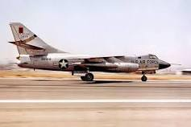

Reconnaissance aircraft, also known as reconnaissance planes or surveillance aircraft, are specialized platforms designed for gathering information and conducting reconnaissance missions. These aircraft are primarily used to gather intelligence, surveillance, and reconnaissance (ISR) data for military, civilian, or scientific purposes. The main mission of reconnaissance aircraft is to collect information about enemy activities, monitor specific areas of interest, or conduct mapping and surveying operations. These aircraft are equipped with a variety of sensors, cameras, and advanced imaging systems to capture visual or electronic data from the air. Reconnaissance aircraft are designed to operate at various altitudes and speeds, depending on the mission requirements. They may fly at high altitudes for wide-area surveillance or at low altitudes for detailed imagery or signals intelligence collection. These aircraft are often equipped with systems to enhance stability, reduce vibrations, and ensure clear and high-resolution imagery or data capture. The sensors and systems aboard reconnaissance aircraft include electro-optical and infrared cameras, radar systems, signals intelligence (SIGINT) equipment, and other specialized sensors. These systems enable the detection, identification, and tracking of targets, as well as the collection of electronic signals or other relevant data.